Manuscript draft in the format of Geophysical Journal International · not submitted
We invert 99 716 analyst P and S arrival times from 3770 earthquakes recorded by 50 stations of the Pacific Northwest Seismic Network around Mount Rainier (Washington, USA) for perturbations of ln Vp and ln Vs relative to a starting model that combines a rule-based geological model, a critical-zone model, regional tomography and a joint travel-time calibration. Travel times are computed with a fast-marching eikonal solver on a 250 m grid that includes topography and keeps the travel time of the thin near-surface layers, every earthquake is relocated in every trial model, and hypocentral parameters are removed from the velocity problem by parameter separation. The smoothing weight and the number of iterations are set by earthquakes in 10 km squares excluded from the inversion. Two Gauss–Newton steps reduce the root-mean-square residual of these held-out events from 0.0908 to 0.0712 s for P (22 per cent) and from 0.1794 to 0.1167 s for S (35 per cent); a third step does not lower it further, and the inversion stops. Checkerboard tests recover 12 km structure between sea level and 6 km depth with correlations of 0.65–0.73 and about half of its amplitude, and 6 km structure in the top 2 km with correlations near 0.4. Within the sampled volume the update has a mean close to zero and a root-mean-square of 4–5 per cent. It removes most of the mean residual at individual stations, which is consistent with near-station structure being represented in the model rather than in station terms. Ray density falls to almost zero below about 15 km and beneath the summit below about 5 km, so the perturbations there are set by the regularisation.
Key words: Seismic tomography; Body waves; Crustal imaging; Volcano seismology; Inverse theory.
data/processed/model_let.zarr; the model product model.zarr is unchanged. Section 7 lists what we consider necessary before the update replaces the model or the draft goes to review.Moran et al. (1999) used local earthquakes to image the P-wave structure of the crust around Mount Rainier, including a low-velocity body 5–18 km beneath the summit. The rainier3d model takes a different route. It builds the upper crust from mapped geology and a rock-physics law, adds a critical-zone model for the top 150 m, fuses the result with regional tomography at long wavelengths, and calibrates a small number of global parameters against PNSN travel times (stage S13). That calibration adjusts depth-dependent factors and therefore cannot correct lateral errors in the geological rules, such as where map units are extended to depth.
Here we ask how much lateral structure the existing PNSN arrival times can add to that model, and with what resolution. We treat the geology-based model as the reference and invert only for smooth perturbations, so that the result can be read as a correction to a prior rather than as an independent image. We choose the regularisation and the stopping point with earthquakes held out by region, which tests whether an update obtained in one part of the network improves predictions elsewhere.
The picks are PNSN analyst P and S arrival times from the ComCat phase-data products of all events of magnitude 0.5 or larger located in the 70 × 75 km model domain between 2015 January 1 and the data freeze of 2026 September 23 (3867 events, 117 609 picks), merged with the 91 validation events of stage S13. Only stations inside the domain are used, because the travel-time grid covers the domain only; this leaves 50 stations. Events need at least six picks, four of them P. The resulting data set has 3770 events, 57 659 P and 42 057 S picks, and a median of 25 picks per event (Table 1, Fig. 1).
The seismicity has two dominant clusters (Fig. 1a, c). About 1720 events lie less than 1 km below sea level beneath the summit, spread over the whole period with 620 of them in 2025, and the western Rainier seismic zone extends from about 2 to 15 km depth some 15 km west of the summit. Events are assigned to a fitting and a held-out set by 10 km squares of their catalogue epicentres. Squares are allocated in decreasing order of pick count to whichever set has fewer picks, which gives 1921 fitting and 1849 held-out events with 49 859 and 49 857 picks. The summit square falls in the fitting set, so 81 per cent of the shallow summit events are fitted and most of the held-out events belong to the western seismic zone and the outer domain. The held-out score therefore measures transfer of the update to regions away from the summit cluster.
| Quantity | Fitting | Held out | Total |
|---|---|---|---|
| Events | 1921 | 1849 | 3770 |
| Picks | 49 859 | 49 857 | 99 716 |
| P picks (weight > 0, starting model) | 29 344 | 28 225 | 57 569 |
| S picks (weight > 0, starting model) | 20 454 | 21 539 | 41 993 |
| Stations | 50 (all inside the model domain) | ||
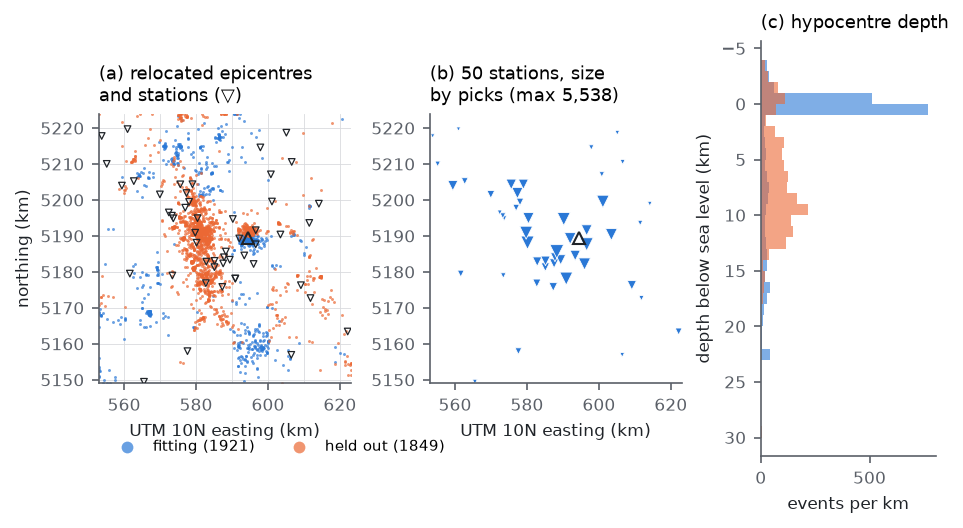
The starting model is the rainier3d model of this branch: rule-based geology with the critical zone in its top 150 m, a tapered spherical low-velocity body centred 11.5 km below sea level, geological contacts and unit boundaries low-passed with a cutoff that grows with depth, fusion with the USGS Cascadia community velocity model and CRESCENT Gen0 at long wavelengths, and the S13 calibration. It is resampled on a 250 m travel-time grid (281 × 301 × 139 nodes, 11.8 million, from 4.5 km above to 30 km below sea level). Within the depth range of the top model level, whose cells are 50 m thick, each grid node takes the average slowness of the cells within half a grid spacing of it, so that thin slow layers such as the critical zone keep their vertical travel time; nearest-node sampling would keep or miss them depending on where a node falls. At the first rock node below the ground this lowers the median Vs from 2783 to 2293 m s−1. Grid cells more than one cell above the ground carry 343 m s−1, so rays cannot cross valleys through air at rock speed. Travel-time fields are computed for every station and phase with the fast-marching solver of White et al. (2020), using reciprocity; one field takes about 20 s.
Every event is relocated in every trial model by a grid search below the ground on every second node (500 m), followed by a Huber-weighted Gauss–Newton refinement on travel times interpolated on the full grid (Huber 1964; the grid-search-then-refine scheme follows Lomax et al. 2000). Pick uncertainties are 0.14 s for P and 0.23 s for S, the root-mean-square residuals of the PNSN locations of the S13 events; picks beyond five standard deviations receive zero weight. Hypocentres may lie at most 50 m above the ground.
The model is
V(x) = V0(x) exp[m(x)],
with m interpolated trilinearly between nodes spaced 3 km horizontally (24 × 26) and placed at nine depths, −3, 0, 2, 4, 6, 9, 13, 18 and 25 km below sea level, separately for P and S (5616 nodes per phase). The perturbation applies to rock only. The derivative of a travel time with respect to node k is −∫ s wk dl along the ray, where s is the slowness and wk the trilinear weight; rays are traced down the gradient of the station's travel-time field in steps of a quarter grid spacing. For the best-sampled S node, the ray derivatives of 17 901 picks agree with finite differences through the eikonal solver with a slope of 0.998 and a correlation of 0.9993 (Fig. 2a).
For each event, the rows of the system are scaled by the square root of the location weight divided by the pick uncertainty, and projected onto the orthogonal complement of the partial derivatives with respect to the hypocentre and the origin time (Pavlis & Booker 1980). The projected system relates the residuals that relocation cannot remove to the velocity perturbation.
Each step minimises the projected misfit of the fitting events plus λs ‖Dm‖2 + λd ‖m‖2, where D stacks second differences along the two horizontal axes and depth (with the coefficients of uneven spacing in depth), both weights are relative to the mean squared column norm of the projected matrix, and λd = 0.03. The system is solved with LSQR (Paige & Saunders 1982), in the manner of Thurber (1983). At the first iteration the linearised held-out misfit is computed for λs between 0.1 and 100 (Fig. 2b). It decreases monotonically towards small weights and flattens below 0.3 (0.4741 at 0.3, 0.4722 at 0.1), where the damping rather than the smoothing controls the solution. We take the largest weight whose score is within 1 per cent of the best, λs = 0.3, as the smoothest model that the held-out events do not penalise.
After each step all events are relocated in the new model and the held-out misfit, the mean of (residual/σ)2 over P and S picks, is recomputed. A step is kept if it lowers this misfit by more than 0.5 per cent. Otherwise half the step is tried, and if that also fails the last kept model is final. The first two steps lowered the held-out misfit from 0.502 to 0.265 and 0.258. The third step lowered it by only 0.2 per cent, to 0.2576, and its half to 0.2577, so the inversion stopped with the model of the second step (Fig. 2c). Every trial model is saved before its travel times are computed and checked for non-finite or non-positive velocities, and its travel-time fields must be computed within three times the time taken for the starting model, otherwise the trial counts as rejected. A first run with λs = 0.1 stalled in the eikonal solves of its second iteration for 1.5 hours before these safeguards were added; we have not identified the cause.
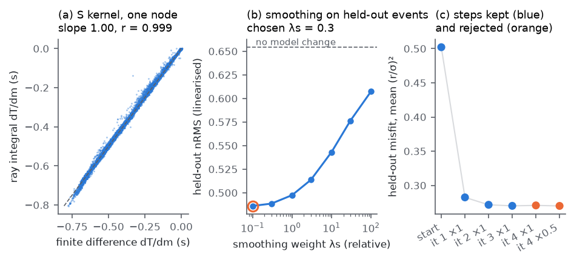
We trace the ray of every pick in the final model and record, in each 250 m cell, the ray length and the number of distinct rays. P rays pass through 1.05 million of the 11.8 million cells and S rays through 0.88 million; 118 330 cells are crossed by ten or more P rays, and the densest cell, 12 km south of the summit at 0.75 km elevation, by 3598. The total ray length is 1.11 million km for P and 0.82 million km for S. Aggregated in 1 km cubes (Fig. 3), coverage is densest beneath the summit in the top 2 km and along the western seismic zone between 2 and 12 km depth. It thins rapidly below 12 km and is nearly absent below 15 km. Directly beneath the summit, few rays pass below about 5 km depth, because the summit earthquakes are shallow and the deeper earthquakes lie to the west (Fig. 3b). The sampled rays (Figs 4 and 5) show the two families: short, steep paths from the summit cluster to the stations on the edifice, and longer paths from the western seismic zone that cross the volume between 2 and 12 km depth at moderate incidence.
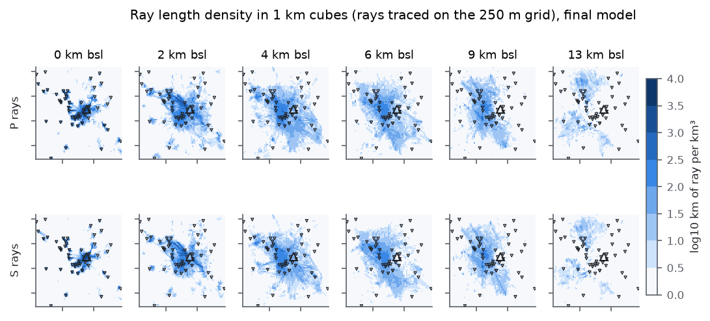
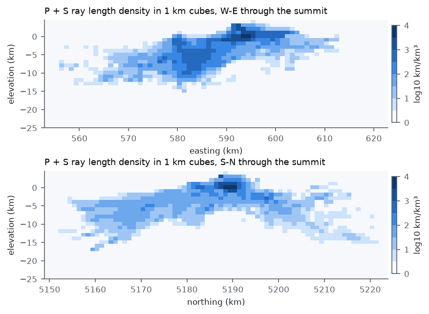
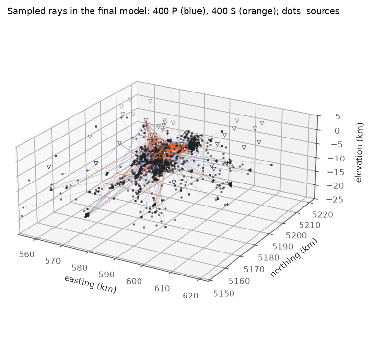
Loading the interactive view of 2000 ray paths…
We test resolution with checkerboards of ±5 per cent and cell sizes of 12 and 6 km in all three directions, with P and S of opposite sign so that leakage between phases is visible (Figs 6–8). Synthetic data are computed with the projected kernels of the final model, Gaussian noise at the pick uncertainty is added, and the patterns are inverted with the same weights as the data. This is a linear test around the final model and does not include changes of ray paths or hypocentres. Checkerboard tests describe the recovery of one pattern and can overstate resolution of other structures (Lévêque et al. 1993), so we read them as an upper bound.
The 12 km pattern is recovered with correlations of 0.65–0.73 between sea level and 6 km depth, and with 41–55 per cent of its amplitude (Table 2). Recovery falls to 0.51–0.55 at 9 km and to 0.26–0.33 at 13 km. The nodes 3 km above sea level and at 25 km depth recover the pattern with the wrong sign, so these layers are controlled by the smoothing operator. The 6 km pattern is recovered with correlations of 0.40–0.44 and about 19 per cent of its amplitude in the top 2 km, where the summit earthquakes and the dense stations on the edifice provide crossing rays, and with 0.20–0.26 between 4 and 9 km. The recovered 6 km fields are recognisable near the summit and noisy elsewhere (Fig. 7).
| Node depth (km bsl) | P, 12 km | S, 12 km | P, 6 km | S, 6 km |
|---|---|---|---|---|
| −3 | −0.22 (−0.12) | −0.27 (−0.14) | −0.01 (−0.02) | 0.06 (0.04) |
| 0 | 0.65 (0.41) | 0.72 (0.44) | 0.41 (0.19) | 0.44 (0.19) |
| 2 | 0.69 (0.49) | 0.72 (0.49) | 0.40 (0.19) | 0.41 (0.18) |
| 4 | 0.70 (0.52) | 0.73 (0.55) | 0.21 (0.09) | 0.25 (0.09) |
| 6 | 0.69 (0.49) | 0.73 (0.51) | 0.22 (0.09) | 0.20 (0.08) |
| 9 | 0.51 (0.29) | 0.55 (0.28) | 0.26 (0.11) | 0.24 (0.09) |
| 13 | 0.26 (0.12) | 0.33 (0.16) | 0.00 (0.00) | 0.05 (0.02) |
| 18 | 0.55 (0.26) | 0.54 (0.35) | 0.02 (0.01) | 0.00 (0.00) |
| 25 | −0.15 (−0.07) | −0.26 (−0.10) | −0.05 (−0.04) | −0.16 (−0.06) |
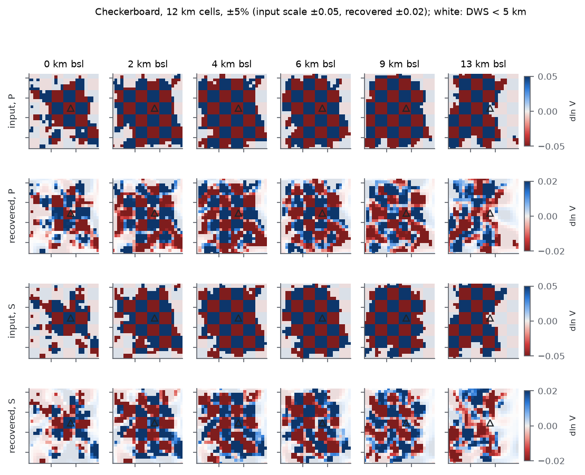
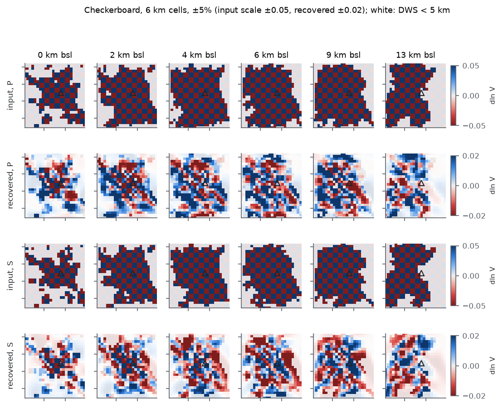
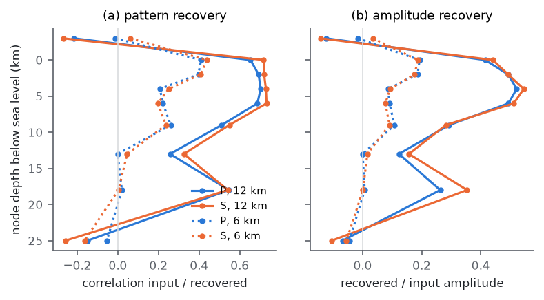
The two kept steps reduce the residuals of both sets (Table 3, Fig. 9). For held-out events the RMS falls by 22 per cent for P and 35 per cent for S, and the median absolute residual by 36 and 45 per cent. The reduction for fitting events is larger, 40 and 47 per cent; the difference between the two sets is the part of the update that does not transfer across regions. The RMS of held-out residuals averaged per station (stations with at least 20 picks) falls from 0.051 to 0.022 s for P and from 0.151 to 0.062 s for S, and the largest S station mean from 0.39 to 0.18 s (Fig. 10).
| Set and phase | RMS, start (s) | RMS, final (s) | Change | Median |r|, start (s) | Median |r|, final (s) |
|---|---|---|---|---|---|
| Held out, P | 0.0908 | 0.0712 | −22% | 0.0482 | 0.0307 |
| Held out, S | 0.1794 | 0.1167 | −35% | 0.1083 | 0.0592 |
| Fitting, P | 0.0910 | 0.0544 | −40% | – | – |
| Fitting, S | 0.1792 | 0.0947 | −47% | – | – |
| Held-out misfit, mean (r/σ)2 | 0.502 | 0.258 | −49% | – | |
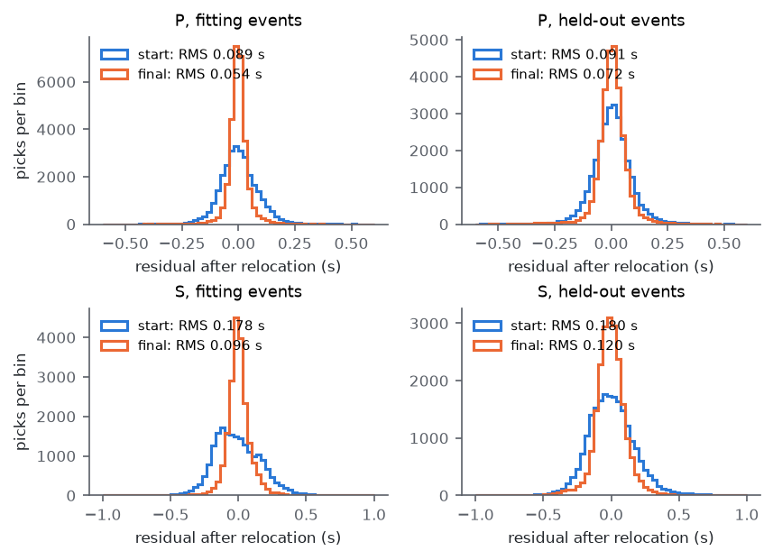
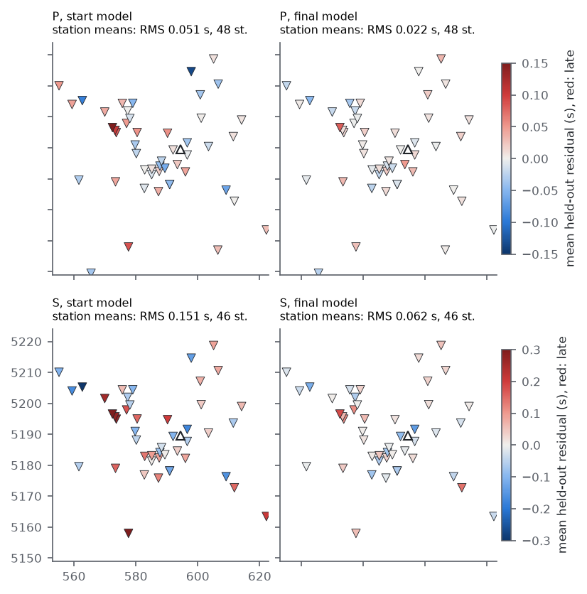
Nodes with a derivative weight sum above 5 km make up 51 per cent of the P nodes and 46 per cent of the S nodes (Fig. 11, bottom row). Within them the perturbation has a mean of +0.004 and an RMS of 0.041 for ln Vp, and a mean of −0.001 and an RMS of 0.048 for ln Vs; the 5th to 95th percentiles are −0.066 to +0.065 for P and −0.080 to +0.059 for S. The mean stays within ±0.007 of zero at every depth for P, and ranges from −0.019 at sea level to +0.013 at 13 km for S.
Between sea level and 6 km depth, velocities increase by 5–8 per cent in an arc north-east, east and south of the summit and decrease by similar amounts to the west and south-west, around and above the western Rainier seismic zone (Fig. 11). Within 4.5 km of the summit, the node layer 3 km above sea level, inside the edifice, is slower by 4.4 per cent in Vp and 7.2 per cent in Vs on average, and the layers at sea level and 2 km depth are faster by 1–4 per cent. The 12 km checkerboard is recovered with the wrong sign at the layer above sea level (Table 2), so the edifice anomaly cannot be interpreted with the present parameterisation. The vertical sections (Fig. 12) show a fast upper crust immediately east of the western seismic zone and a slow column beneath the summit from about 5 to 20 km depth, which extends through the low-velocity body of the starting model. Ray coverage beneath the summit is nearly absent below 5 km (Fig. 3b), so this column is the downward continuation of the edifice anomaly by the smoothing operator and carries no information from the data. Outside the sampled nodes the perturbation reaches 0.21 for P and 0.32 for S, mostly in the corners of the domain; the second-difference regulariser does not penalise linear gradients and extends them into unsampled volume.
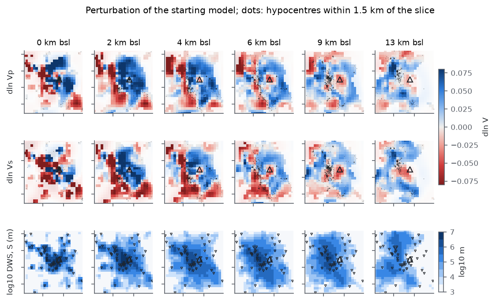
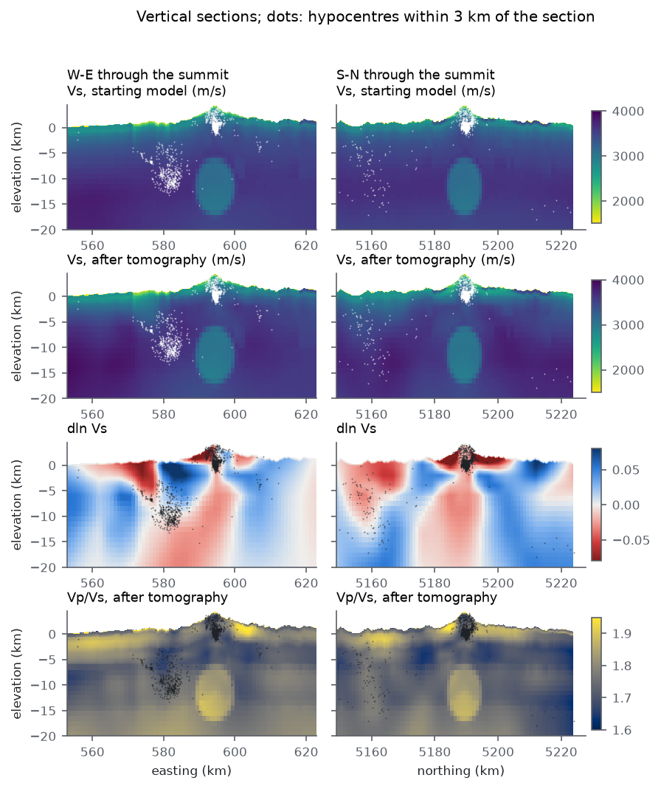
Relocation in the final model moves epicentres by a median of 510 m and hypocentres shallower by a median of 684 m (Fig. 13). The depth change is larger beneath the summit (median −904 m for 1666 events within 5 km of it) than elsewhere (−435 m), and 113 events move by more than 3 km in depth. The median formal depth uncertainty falls from 420 to 263 m. Since the mean velocity change is close to zero, the upward shift beneath the summit is unlikely to be a uniform trade-off between velocity and depth; it may be related to the slower edifice above sea level, which lies at a node layer that the checkerboard test does not resolve. The present station geometry does not constrain the absolute depth of the summit cluster independently.
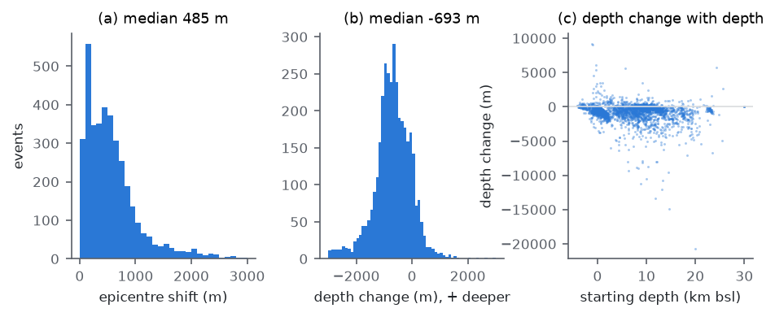
An earlier run with the same data and splits used the 500 m grid of the S13 calibration, nearest-node sampling of the starting model and the smoothing weight of its own scan, λs = 10 (Table 4). It kept one step, reduced held-out residuals less, resolved only 12 km structure, and produced a positive mean perturbation of +2.2 per cent in Vp and +1.6 per cent in Vs, which coupled to a larger upward shift of hypocentres. On the 250 m grid with slowness averaging the mean perturbation is close to zero. The two runs differ in grid spacing, sampling of the starting model and smoothing weight at once, so the table does not attribute the differences to any one of them. The stronger resolution on the finer grid follows in large part from the weaker smoothing, which the held-out events chose; the finer grid made the kernels more accurate (slope 0.998 against 1.02).
| Quantity | 500 m grid | 250 m grid |
|---|---|---|
| Smoothing weight λs chosen on held-out events | 10 | 0.3 |
| Steps kept | 1 | 2 |
| Kernel check, slope and correlation | 1.02, 0.998 | 0.998, 0.9993 |
| Held-out RMS start, P / S (s) | 0.0917 / 0.1781 | 0.0908 / 0.1794 |
| Held-out RMS final, P / S (s) | 0.0788 / 0.1437 | 0.0712 / 0.1167 |
| Held-out misfit final, mean (r/σ)2 | 0.349 | 0.258 |
| 12 km checkerboard correlation, P, 0–6 km | 0.43–0.45 | 0.65–0.70 |
| 6 km checkerboard correlation, P, 0–2 km | 0.05–0.09 | 0.40–0.41 |
| Mean ln Vp / ln Vs, sampled nodes | +0.022 / +0.016 | +0.004 / −0.001 |
| RMS of held-out station means, P / S (s) | 0.036 / 0.116 | 0.022 / 0.062 |
| Median depth change of hypocentres | −760 m | −684 m |
| Run time (10 cores) | 35 min | 74 min |
The held-out reduction of 22 per cent for P and 35 per cent for S shows that the arrival times contain lateral information that the geology-based model, its fusion with regional tomography and its depth-dependent calibration do not capture. The update transfers across regions, since every held-out event lies in a square that contains no fitting event. It does not transfer completely: the fitting events gain more, by 40 and 47 per cent.
The station-mean residuals fall by more than half without station terms. In this model the near-surface structure beneath each station is carried by the critical-zone model, the topography and, after the inversion, by the shallowest nodes, and the result suggests that this representation can absorb most of the station delays. It also means that the shallow perturbations combine structure and any remaining site effect, and should be interpreted together with the critical-zone model rather than as crustal structure alone.
Resolution is set by the station geometry, the depth distribution of the earthquakes and the regularisation. The 12 km checkerboard is recovered with half of its amplitude between sea level and 6 km, and the 6 km checkerboard only in the top 2 km near the summit. Below 12 km, and beneath the summit below 5 km, rays are too few for the perturbations to be interpreted, which includes the depth range of the low-velocity body of the starting model. The weak smoothing chosen on the held-out events also makes the update rougher than on the 500 m grid, and the roughness at scales below about 6 km is not resolved.
Before the update replaces the model product, we consider five steps necessary. The travel-time grid should be extended beyond the model domain so that stations outside it contribute; of the 6876 picks of the S13 events, 3108 remain after restriction to stations and events inside the domain. Damping should increase where the derivative weight sum is small, or the update should be applied only there, so that unsampled volume returns to the starting model. A test with structures of realistic shape should be added, together with a nonlinear version of the resolution test that includes relocation. The two grids should be compared at the same smoothing weight, to separate the effect of the grid from that of the regularisation. More S arrivals, for example from automatic picking of the 2025 nodal deployment, would reduce the larger S uncertainties.
A regularised local-earthquake tomography on a 250 m eikonal grid, with relocation in every model and region-based held-out validation, reduces held-out P and S residuals at Mount Rainier by 22 and 35 per cent relative to a geology-based, calibrated three-dimensional model, and halves the mean residual at stations without station terms. The data resolve structure of about 12 km between sea level and 9 km depth, and about 6 km in the top 2 km near the summit. Within the sampled volume the update is a pattern of 5–8 per cent contrasts with a mean close to zero; below 12 km and beneath the summit below 5 km it is not constrained by rays.
Picks are from the USGS ComCat phase-data products for PNSN (network code uw), queried up to the data freeze of 2026 September 23 and cached in data/raw/pnsn/catalog_2015-01-01_2026-09-23_m0.5. The inversion is scripts/37_tomography.py with rainier3d.validate.tomo; the figures are drawn by scripts/37_tomography_figures.py from outputs/tomography/, which also holds the ray density (ray_density.nc), the sampled ray paths (rays_sample.json) and every trial model. All parameters are in the tomography block of configs/domain.yaml; the node spacing, depths, damping, block size, stopping tolerance and grid spacing are placeholders chosen by the authors. The result is data/processed/model_let.zarr; the 500 m run is kept in outputs/tomography_3770ev_500m/ and data/processed/model_let_500m_20261013.zarr.
Huber, P.J., 1964. Robust estimation of a location parameter, Ann. Math. Stat., 35(1), 73–101. doi:10.1214/aoms/1177703732
Lévêque, J.-J., Rivera, L. & Wittlinger, G., 1993. On the use of the checker-board test to assess the resolution of tomographic inversions, Geophys. J. Int., 115(1), 313–318. doi:10.1111/j.1365-246X.1993.tb05605.x
Lomax, A., Virieux, J., Volant, P. & Berge-Thierry, C., 2000. Probabilistic earthquake location in 3D and layered models, in Advances in Seismic Event Location, pp. 101–134, eds Thurber, C.H. & Rabinowitz, N., Kluwer. doi:10.1007/0-306-48018-X_5
Moran, S.C., Lees, J.M. & Malone, S.D., 1999. P wave crustal velocity structure in the greater Mount Rainier area from local earthquake tomography, J. geophys. Res., 104(B5), 10 775–10 786. doi:10.1029/1999JB900036
Paige, C.C. & Saunders, M.A., 1982. LSQR: an algorithm for sparse linear equations and sparse least squares, ACM Trans. Math. Softw., 8(1), 43–71. doi:10.1145/355984.355989
Pavlis, G.L. & Booker, J.R., 1980. The mixed discrete-continuous inverse problem: application to the simultaneous determination of earthquake hypocenters and velocity structure, J. geophys. Res., 85(B9), 4801–4810. doi:10.1029/JB085iB09p04801
Thurber, C.H., 1983. Earthquake locations and three-dimensional crustal structure in the Coyote Lake area, central California, J. geophys. Res., 88(B10), 8226–8236. doi:10.1029/JB088iB10p08226
White, M.C.A., Fang, H., Nakata, N. & Ben-Zion, Y., 2020. PyKonal: a Python package for solving the eikonal equation in spherical and Cartesian coordinates using the fast marching method, Seismol. Res. Lett., 91(4), 2378–2389. doi:10.1785/0220190318